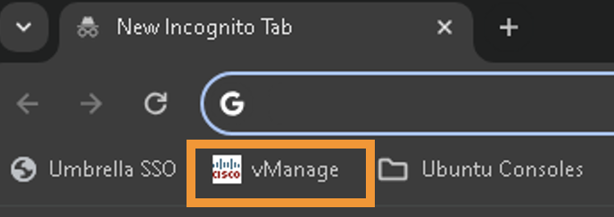
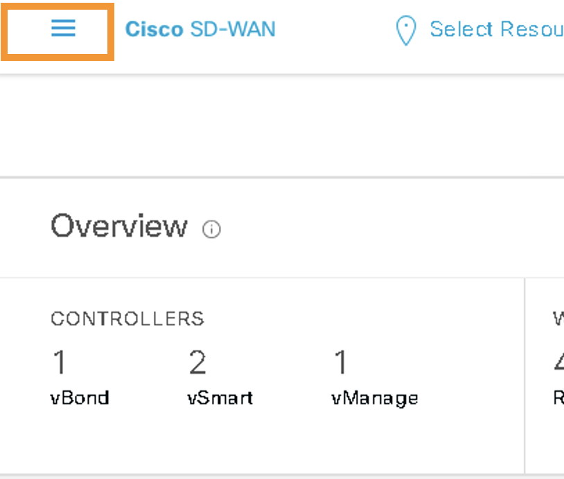
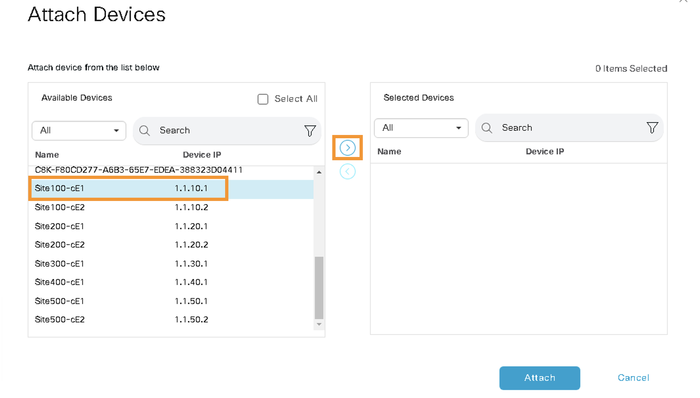
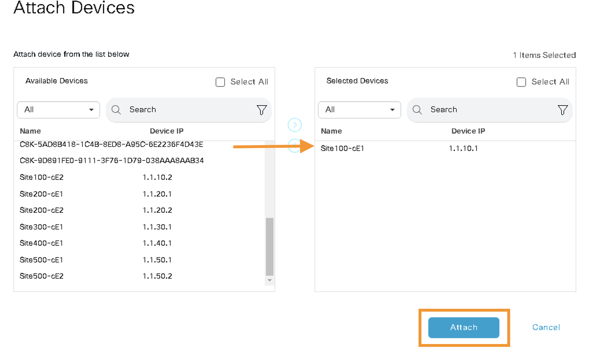
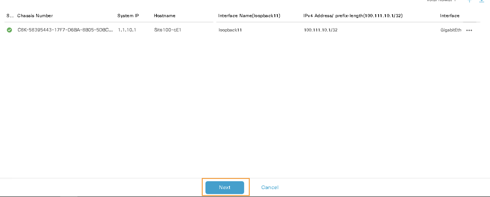
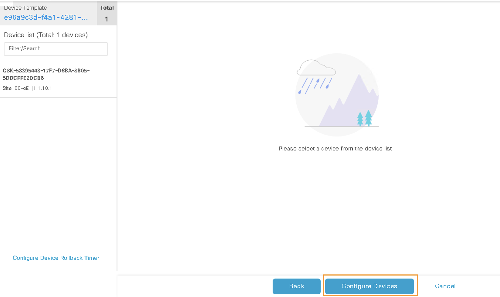

Task 2 - vManage Templates
Cisco SD-WAN vManage is a centralized network management system that simplifies the configuration, monitoring, and management of Cisco's SD-WAN infrastructure.
Cisco vManage Device and Feature templates are key components of the Cisco SD-WAN solution. These templates are used to simplify the process of configuring and managing SD-WAN devices in a network, offering a standardized and scalable way to deploy configurations to multiple devices. This approach ensures consistency and reduces the likelihood of manual errors.
In this lab, vManage has been pre-configured with various Device and Feature Templates. The pre-configured templates contain all the configurations required for a functional SD-WAN Fabric.
In this task, we will attach cEdges (Site-100, Site-300, and Site-400) to their respective vManage Templates and this is performed on a GUI via a web browser. This process streamlines network management by enabling efficient scalability and reducing manual configuration errors. It allows for the rapid deployment of new devices and easy updates to existing ones, ensuring network settings are in line with predefined policies and standards.
Step 1 - vManage GUI
Objective: In this step, we will access the Cisco SD-WAN vManage through a web browser for provisioning. All provisioning tasks will be performed using a Google Chrome browser on the RDP session (i.e., Jumphost).
-
Log on to the vManage GUI by launching the
Google Chromeweb browser, which can be found either on the Desktop or in the Taskbar of your RDP session (Jumphost). -
After launching Chrome, click on the
vManagebookmark on the bookmark bar.  -
Log in to vManage using the following credentials:
- Username:
admin - Password:
C1sco12345
Step 2 - Device Template for cEdges
Objective: In this step, we will manage the device templates for the cEdge devices in the Cisco SD-WAN vManage. This involves identifying and attaching the correct device templates to their respective cEdge devices as per the specified criteria.
1. Navigating in vManage:
- After logging into vManage, click on the three bars () at the top left side to open the navigation menu. 
2. Accessing Device Templates:
- Navigate to Configuration > Templates.

3. Selecting Device Templates:
- On the
Configuration - Templatespage, click onDevice Templates.
4. Identifying cEdge Devices:
- The
Device Templatepage lists various control and cEdge devices. We will only attach the device template to their respective cEdge as per the following table. The cEdge devices can be recognized by theirDescription:
| Description | vEdge |
|---|---|
| Device template of Site100-cE1 with Site ID: 100 and System IP: 1.1.10.1 | Site100-cE1 |
| Device template of Site300-cE1 with Site ID: 300 and System IP: 1.1.30.1 | Site300-cE1 |
| Device template of Site400-cE1 with Site ID: 400 and System IP: 1.1.40.1 | Site400-cE1 |
Note: Please don't add Site200-CE1 to any template.
5. Attaching Device Templates:
-
Locate the Site100-cE1 device from its description and click on the three dots (
...) on the right side.
-
On the
Attach Devicespage, scroll down to or search forSite100-cE1and select it with the Right arrow (>).  -
After selecting the Site100-cE1, click on
Attach. 
6. Completing the Attachment Process:
-
On the next page, click
Next.  -
Finally, click on
Configure Devicesto attach the template configurations to the cEdge device.  -
Wait for the task to be successful.

Important Note: The above screenshots are for Site-100 cE1 only. You must repeat these tasks for Site300-cE1 and Site400-cE1.
Conclusion: The device templates for cEdge devices are now correctly configured and attached in vManage, ensuring proper management and configuration of these devices as per the network requirements.